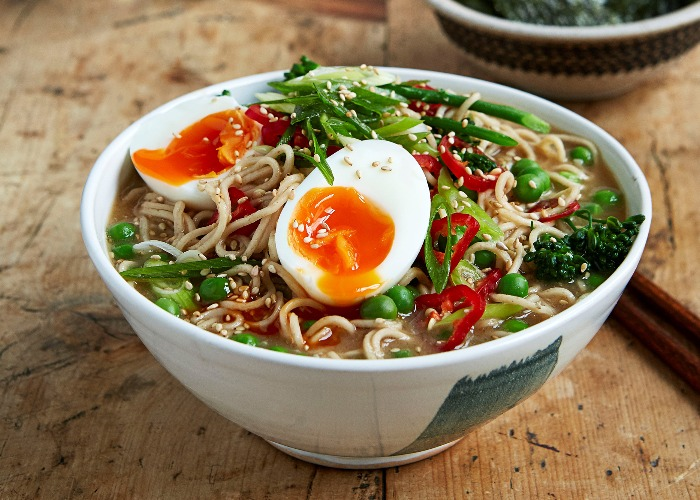

Ramen

Rather than diving into a packet of crisps, instant or quick-cook ramen is ideal when
you’ve been out late and fancy a bite to eat before bedtime.
You can really play around with this recipe, adding all manner of ingredients.
These work particularly well – assorted pickles, citrus, herbs, mushrooms,
kimchi, sriracha sauce, coconut milk or cream, peanut butter and Korean gochujang paste.
Ingredients
-
150 g packet miso ramen noodles (or plain noodles)
-
1 handful frozen peas, or any vegetables you have lurking in the fridge
(carrots, sugarsnap peas, corn, bean sprouts, finely shredded cabbage, courgette etc)
-
1 egg
-
1 tbsp red or brown miso paste (if using plain noodles)
-
1 fresh green chilli, sliced
-
1 spring onion, sliced and placed in a bowl of iced water for a few minutes
-
1 pinch black or white sesame seeds
-
1 tsp toasted sesame oil, to taste
-
1 handful Japanese dried nori seaweed, to serve (optional)
Steps
-
Cook the ramen noodles according to the packet instructions, adding the frozen peas
(or whichever vegetables you opt for) to the pan so they cook at the same time.
-
Cook the egg by poaching it in the broth (whisk it in a bowl first then pour it into the broth or crack it in),
boiling it whole in a separate pan, or giving it a quick fry.
-
Add the miso paste to the noodle cooking liquid (if cooking plain noodles) and stir through.
-
Remove from the heat and garnish with the chilli, drained spring onion,
sesame seeds, sesame oil and any other toppings you like.
-
The egg goes on last if you cooked it separately, along with the seaweed (if using).